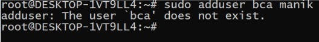
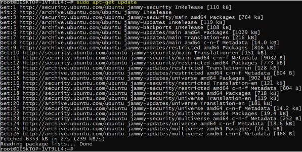
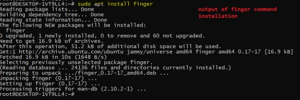
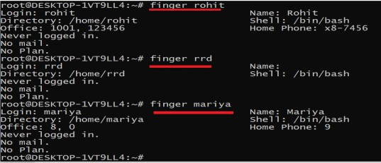
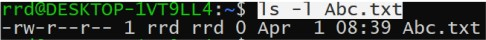

1. How to create a new group?
- to create a new we use "addgroup" command
- syntax: sudo addgroup group_name
- To execute addgroup command we need admin access.
- group name should be in lower case otherwise we will get
an error
- group information is availabel in /etc/group file
- we can display /etc/group file content and cross check
created group is available or not
2. How to create a new user?
-To create new user we use "adduser" command
-Syntax:
sudo adduser group_name user_name
-in the above syntax group name is optional
If we don't provide group name then new group will
be created and naem of that group is same as user name .
-If you provide group name then that group should be
exist in the system
-user name should be in lower case
Practical example: creating user without specifying user name
If you don't specify group name then system internally create a group
And name of group is same as user name


Here we are getting an error "bca" does not exist.
If we are specify the group name then use option
-ingroup
Syntax:
sudo adduser -ingroup group_name user_name
Example : sudo adduser -ingroup bca manik

3. How to get information about particular user?
i.e finger command
- To get information about particular user we use "finger" command
- syntax
finger user_name
- by default this command is not available but we can install
manually as below
sudo apt install cmd_name
sudo apt install finger
- while installing finger command some times we will get an error
"Unabel to locate package 'finger'"
- So, in that case first execute below command
sudo apt-get update
- then execute install command



4. How to delete user?
- To delete user we use "deluser" command
- syntax:
sudo deluser user_name
- sudo deluser vivek
5. How to delete group?
- To delete a group we use "delgroup" command
- syntax:
sudo delgroup group_name
- Example: Delete bca2020 group
6. Change ownership of a file?
- To change owner of a file we use "chown" command
- Here chown stands for change owner
- Syntax:
sudo chown owner_name file_name
- Example: I want to change owner of Abc.txt file
current owner name of Abc.txt is rrd

by default chown command change the owner of a file
present in current working directory.
If you want to change file owner which is present in another location then
specify that location as below
sudo chown owner_name file_path
Example suppose I want to change owner of cutdemo.txt
and that file is located at /home/rrd/cutdemo.txt then
command will become
sudo chown rohit /home/rrd/cutdemo.txt
7. Change group name of a file?
- To change group name of a file we use "chgrp" command
- Here chgrp stands for change group
- Syntax:
sudo chgrp group_name file_name
If you want to change file group name which is located
at different location then use below syntax
sudo chgrp group_name file_path
Example: sudo chgrp bca /home/rrd/cutdemo.txt
8. Add user in a group
a.add single user in a group
- To add user in a group we use gpasswd command
- If we want to add a single user in a group
then use -a option
- If we want to add multiple users in a group
then use -m option
- If we want to delete a user from a group then use -d option
Example: Add mariya user in 'ui_dev' group
sudo gpasswd -a user_name Group_name
sudo gpasswd -a vivek ui_dev
Example: Add amit,rrd, rohit and pawan in ui_dev group
sudo gpasswd -M user1,user2,user3 group_name
sudo gpasswd -M amit,rrd,rohit,pawan ui_dev
Here we need to seperate multiple user name by comma
Delete user from a group
syntax:
sudo gpasswd -d user_name group_name
Example: delete amit from ui_dev group
sudo gpasswd -d amit ui_dev
Add single user in a mutiple groups
Syntax:
sudo usermod -a -G group1,group2,group3 user_name
Example: add rohit into g1,bca,be2021
sudo usermod -a -G g1,bca,be2021 rohit
If we want know particular user group info
then use groups command
syntax: groups user_name
Change password
- To change password we use command passwd
a. change own passwd
b. change other user passwd
a. Change own password
syntax : passwd user_name
b. Change other user passwd
syntax:
sudo passwd user_name
Go to next page